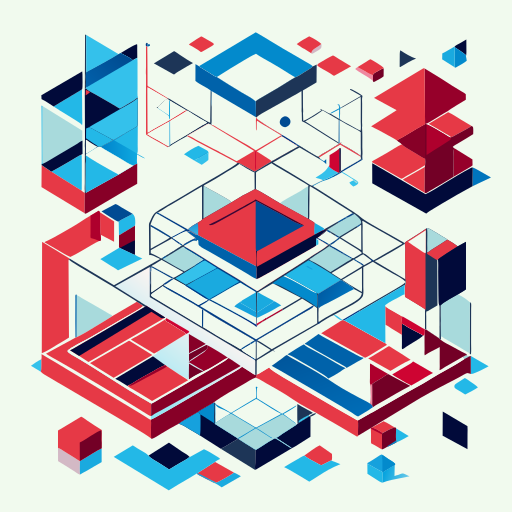
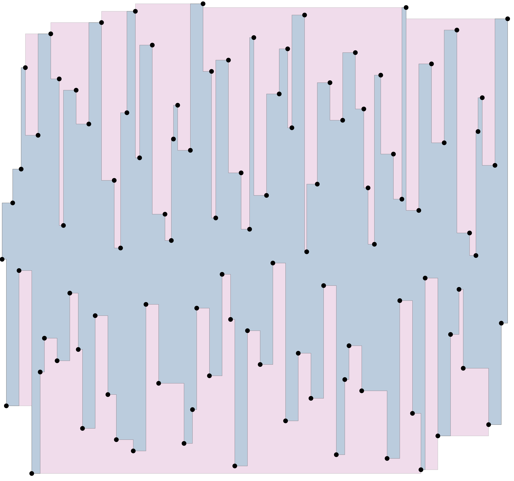
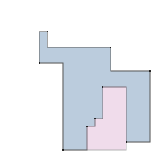
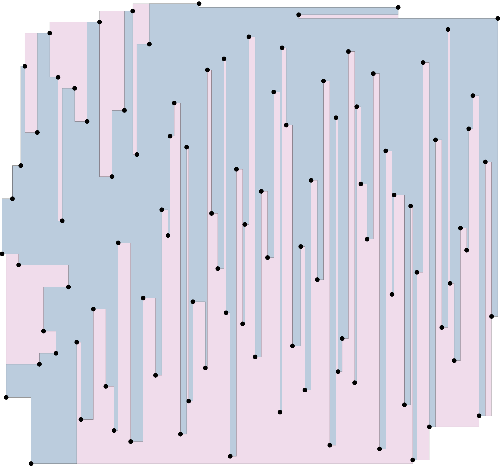
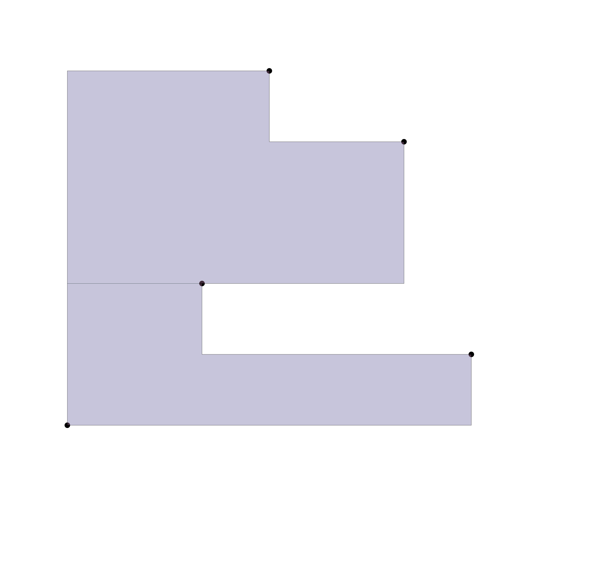
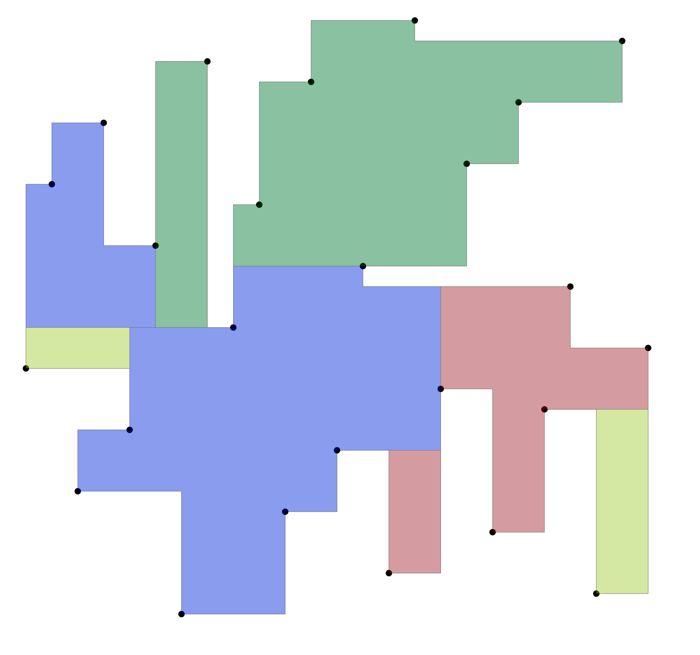
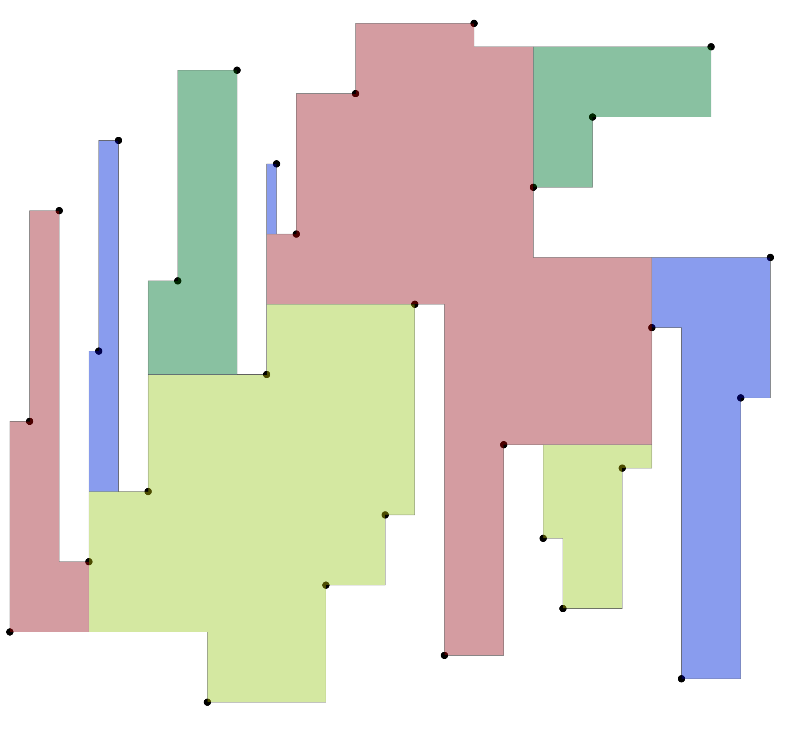
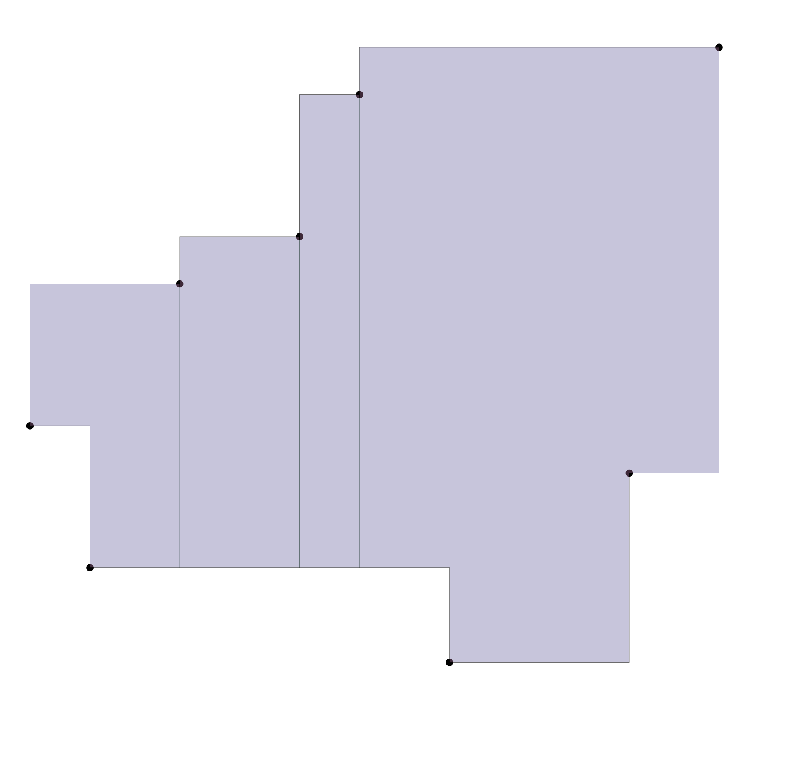

2026

A rectilinear polygon (or orthogonal polygon) is a polygon whose edges are either horizontal or vertical.
graph TD
A[Polygon Types] --> B[General Polygon]
A --> C[Rectilinear Polygon]
B --> D[Any angle edges]
C --> E[Only H/V edges]
style A fill:#e1f5fe
style C fill:#b3e5fc
style E fill:#81d4faGeneral Polygon: Rectilinear Polygon:
/\
/ \ ┌──────┐
/ \ │ │
/ \ │ └────┐
/ \ │ │
/__________\ └────────────┘
Any angles Only 90°/270° cornersclass RPolygon:
_origin: Point[int, int] # Reference point
_vecs: List[Vector2[int, int]] # Edge vectors from origin.. svgbob::
:align: center
(origin) +──v1──>┐
│ │
│ v2
v0<──┘
Origin: (400, 500)
Vectors: [(0,-4), (0,-1), (3,-3), (5,1), ...]Vectors are stored relative to origin, enabling efficient translation.
@classmethod
def from_pointset(cls, pointset: PointSet) -> "RPolygon":
"""Create polygon from a list of points"""
origin = pointset[0]
vecs = [vtx.displace(origin) for vtx in pointset[1:]]
return cls(origin, vecs)def __init__(self, origin: Point[int, int], vecs: List[Vector2[int, int]]):
self._origin = origin
self._vecs = vecscoords = [(0,0), (0,1), (1,1), (1,0)]
points = [Point(x, y) for x, y in coords]
poly = RPolygon.from_pointset(points)def __iadd__(self, rhs: Vector2[int, int]) -> "RPolygon":
"""Translate polygon by adding vector to origin"""
self._origin += rhs
return self
def __isub__(self, rhs: Vector2[int, int]) -> "RPolygon":
"""Translate polygon by subtracting vector from origin"""
self._origin -= rhs
return selfpoly = RPolygon.from_pointset(points)
poly += Vector2(10, 5) # Move right 10, up 5
poly -= Vector2(3, 0) # Move left 3@cached_property
def signed_area(self) -> int:
"""Calculate signed area of the polygon"""
if len(self._vecs) < 1:
return 0
vec0 = self._vecs[0]
return sum(
[v1.x * (v1.y - v0.y) for v0, v1 in zip(self._vecs[:-1], self._vecs[1:])],
vec0.x * vec0.y,
)$$A = \frac{1}{2} \sum_{i=0}^{n-1} (x_i y_{i+1} - x_{i+1} y_i)$$
coords = [(0,0), (0,1), (1,1), (1,0)]
P = RPolygon.from_pointset([Point(x,y) for x,y in coords])
print(P.signed_area) # -1 (clockwise)def is_anticlockwise(self) -> bool:
"""Check if polygon is anticlockwise"""
pointset = [Vector2(0, 0)] + self._vecs
# Find minimum coordinate point (bottom-left)
min_index, min_point = min(enumerate(pointset),
key=lambda it: (it[1].x, it[1].y))
prev_point = pointset[(min_index - 1) % len(pointset)]
return prev_point.y > min_point.yUses the bottom-leftmost vertex as reference to determine orientation.
def to_polygon(self) -> Polygon[int]:
"""Convert rectilinear polygon to standard polygon"""
new_vecs = []
current_pt = Vector2(0, 0)
for next_pt in self._vecs:
if current_pt.x != next_pt.x and current_pt.y != next_pt.y:
# Add intermediate point for diagonal
new_vecs.append(Vector2(next_pt.x, current_pt.y))
new_vecs.append(next_pt)
current_pt = next_pt
# Handle closing segment
first_pt = Vector2(0, 0)
if current_pt.x != first_pt.x and current_pt.y != first_pt.y:
new_vecs.append(Vector2(first_pt.x, current_pt.y))
return Polygon(self._origin, new_vecs)A polygon is monotone if a line in a given direction intersects it at most twice.
graph LR
subgraph "X-Monotone"
A[Leftmost] --> B[Rightmost]
end
subgraph "Y-Monotone"
C[Bottommost] --> D[Topmost]
end
style A fill:#4caf50
style B fill:#4caf50
style C fill:#2196f3
style D fill:#2196f3| Type | Description |
|---|---|
| X-Monotone | Every vertical line cuts at most twice |
| Y-Monotone | Every horizontal line cuts at most twice |
def create_xmono_rpolygon(lst: PointSet) -> Tuple[PointSet, bool]:
"""
Create x-monotone rectilinear polygon.
Returns: (pointset, is_anticlockwise)
"""
return create_mono_rpolygon(
lst,
lambda pt: (pt.xcoord, pt.ycoord), # Sort by x, then y
lambda a, b: a < b
)
Output: rpolyon_xmono_hull.svg

Output: rpolyon_ymono_hull.svg
def rpolygon_make_convex_hull(pointset: PointSet, is_anticlockwise: bool) -> PointSet:
"""Create the convex hull of a rectilinear polygon"""
# Step 1: Make X-monotone hull
S = rpolygon_make_xmonotone_hull(pointset, is_anticlockwise)
# Step 2: Make Y-monotone hull
return rpolygon_make_ymonotone_hull(S, is_anticlockwise)
Output: rpolyon_convex_hull.svg
def point_in_rpolygon(pointset: PointSet, ptq: Point[int, int]) -> bool:
"""
Determine if a point is inside a rectilinear polygon.
Uses ray-casting algorithm.
"""
res = False
pt0 = pointset[-1]
for pt1 in pointset:
if (pt1.ycoord <= ptq.ycoord < pt0.ycoord) or \
(pt0.ycoord <= ptq.ycoord < pt1.ycoord):
if pt1.xcoord > ptq.xcoord:
res = not res
pt0 = pt1
return res.. svgbob::
:align: center
│ │ │ │ │ │
│ │ o────────┐ │ │ │ │
│ │ │ │ │ │ │ │
│ │ │ q───T────F────T────F───────T──────►
│ │ └──o │ │ │ │ │
│ │ │ │ │ │ │ │
│ │ │ o────┘ │ │ │
│ │ │ │ │ │
T = Toggle (intersection)
F = No toggle (ray passes through vertex)Convert a concave rectilinear polygon into a set of convex polygons.
rpolygon_cut_convex()def rpolygon_cut_convex(lst: PointSet, is_anticlockwise: bool) -> List[PointSet]:
"""
Recursively cut a rectilinear polygon into convex pieces.
Steps:
1. Find a concave vertex
2. Find nearest vertex to cut to
3. Make the cut (add new edge)
4. Recursively process both resulting polygons
"""
rdll = RDllist(len(lst))
vertices_list = rpolygon_cut_convex_recur(rdll[0], lst, is_anticlockwise, rdll)
# Convert index lists back to point setsdef _find_concave_point(vcurr, cmp2):
while True:
vnext = vcurr.next
vprev = vcurr.prev
prev_point = lst[vprev.data]
curr_point = lst[vcurr.data]
next_point = lst[vnext.data]
vec1 = curr_point.displace(prev_point)
vec2 = next_point.displace(curr_point)
# Check if edges turn in opposite directions
if vec1.x_ * vec2.x_ < 0 or vec1.y_ * vec2.y_ < 0:
area_diff = (curr_point.ycoord - prev_point.ycoord) * \
(next_point.xcoord - curr_point.xcoord)
if cmp2(area_diff):
return vcurr # Found concave!
vcurr = vnext
return None # Convexdef find_min_dist_point(lst: PointSet, vcurr: Dllink[int]) -> Tuple[Dllink[int], bool]:
"""
Find the closest vertex to connect for cutting.
Returns: (vertex, is_vertical)
"""
min_value = math.inf
vertical = True
v_min = vcurr
pcurr = lst[vcurr.data]
# Search through all vertices
vi = vnext.next
while id(vi) != id(vprev):
# Check horizontal alignment
if (prev_point.ycoord <= pcurr.ycoord <= curr_point.ycoord):
if abs(vec_i.x_) < min_value:
min_value = abs(vec_i.x_)
v_min = vi
vertical = True
# Check vertical alignment
if (next_point.xcoord <= pcurr.xcoord <= curr_point.xcoord):
if abs(vec_i.y_) < min_value:
min_value = abs(vec_i.y_)
v_min = vi
vertical = False
vi = vi.next
return v_min, vertical
Output: rpolygon_convex_cut.svg

Output: rpolyon_cut_convex.svg

Output: rpolyon_cut_convex2.svg

Output: rpolygon_cut_explicit.svg
from physdes.point import Point
from physdes.rpolygon import RPolygon
# Define vertices (must be rectilinear!)
coords = [
(0, 0), (0, 2), (1, 2), (1, 1),
(2, 1), (2, 0)
]
points = [Point(x, y) for x, y in coords]
# Create polygon
poly = RPolygon.from_pointset(points)
# Properties
print(f"Signed area: {poly.signed_area}")
print(f"Is anticlockwise: {poly.is_anticlockwise()}")from physdes.rpolygon import (
create_xmono_rpolygon,
create_ymono_rpolygon,
rpolygon_make_xmonotone_hull,
rpolygon_make_convex_hull
)
# Random points (need sorting first)
coords = [(0, -4), (0, -1), (3, -3), (5, 1), (2, 2), (3, 3), (1, 4)]
points = [Point(x, y) for x, y in coords]
# Create x-monotone polygon
xmono, is_anticlockwise = create_xmono_rpolygon(points)
print(f"X-monotone: {len(xmono)} vertices, anticlockwise: {is_anticlockwise}")
# Create y-monotone polygon
ymono, is_clockwise = create_ymono_rpolygon(points)
print(f"Y-monotone: {len(ymono)} vertices, clockwise: {is_clockwise}")from physdes.rpolygon import point_in_rpolygon
# Define polygon
coords = [(0,0), (0,2), (2,2), (2,0)]
points = [Point(x, y) for x, y in coords]
# Test points
test_points = [
Point(1, 1), # Inside
Point(1, 3), # Outside
Point(0, 1), # On edge
Point(-1, 1), # Outside
]
for pt in test_points:
result = point_in_rpolygon(points, pt)
print(f"Point {pt}: {'Inside' if result else 'Outside'}")from physdes.rpolygon import rpolygon_cut_convex
# Define a concave polygon
coords = [
(0, 0), (0, 3), (1, 3), (1, 1),
(2, 1), (2, 0)
] # L-shaped polygon
points = [Point(x, y) for x, y in coords]
# Cut into convex pieces
convex_pieces = rpolygon_cut_convex(points, is_anticlockwise=False)
print(f"Number of convex pieces: {len(convex_pieces)}")
for i, piece in enumerate(convex_pieces):
print(f"Piece {i+1}: {len(piece)} vertices")| Operation | Time Complexity |
|---|---|
| Create from pointset | O(n) |
| Signed area | O(n) |
| Is anticlockwise | O(n) |
| Create X/Y-monotone | O(nlog n) (sorting) |
| Convex hull (X+Y) | O(n) |
| Point inclusion | O(n) |
| Convex decomposition | O(n2) worst case |
| Module | Purpose |
|---|---|
point.py |
Point and Interval classes |
vector2.py |
2D vector operations |
rdllist.py |
Doubly-linked list for polygon traversal |
polygon.py |
Standard polygon (general edges) |
mywheel.dllist |
C++ dllist for performance |
graph TD
RPolygon --> Point
RPolygon --> Vector2
RPolygon --> RDllist
style RPolygon fill:#ff9800physdes-py/
├── src/physdes/
│ ├── rpolygon.py # Main RPolygon class ⭐
│ ├── rpolygon_cut.py # Convex decomposition ⭐
│ ├── point.py # Point/Interval classes
│ ├── vector2.py # Vector operations
│ ├── polygon.py # General polygon
│ └── rdllist.py # Doubly-linked list
├── tests/
│ ├── test_rpolygon.py # RPolygon tests
│ └── test_rpolygon_*.py # Specific algorithm tests
├── outputs/
│ ├── rpolyon_*.svg # Visualization outputs
│ └── polygon_*.svg # General polygon outputs
└── README.md| Feature | Description | Difficulty |
|---|---|---|
| Boolean operations | Union, intersection of polygons | ⭐⭐⭐ |
| Minkowski sum | Polygon offsetting | ⭐⭐ |
| Skeleton/Medial axis | Center-line extraction | ⭐⭐⭐ |
| Grid-based operations | Pixel-level processing | ⭐⭐ |
| Spatial indexing | R-tree for large datasets | ⭐⭐ |
def rpolygon_is_xmonotone(lst: PointSet) -> bool:
"""Check if rectilinear polygon is x-monotone"""
return rpolygon_is_monotone(lst, lambda pt: (pt.xcoord, pt.ycoord))
def rpolygon_is_ymonotone(lst: PointSet) -> bool:
"""Check if rectilinear polygon is y-monotone"""
return rpolygon_is_monotone(lst, lambda pt: (pt.ycoord, pt.xcoord))
def rpolygon_is_convex(lst: PointSet) -> bool:
"""Check if rectilinear polygon is convex"""
return rpolygon_is_xmonotone(lst) and rpolygon_is_ymonotone(lst)def partition(pred: Callable[[Any], bool], iterable: Iterable[Any]) -> Tuple[List[Any], List[Any]]:
"""Split iterable into True/False groups based on predicate"""
iter1, iter2 = tee(iterable)
return list(filter(pred, iter1)), list(filterfalse(pred, iter2))
# Usage:
is_odd = lambda x: x % 2 != 0
partition(is_odd, range(10)) # ([1,3,5,7,9], [0,2,4,6,8])d((x1, y1), (x2, y2)) = |x1 − x2|+|y1 − y2|
$$A = \frac{1}{2} \sum_{i=0}^{n-1} (x_i y_{i+1} - x_{i+1} y_i)$$
cross(v1, v2) = v1.x ⋅ v2.y − v1.y ⋅ v2.x
physdes-py - VLSI Physical Design Python Library